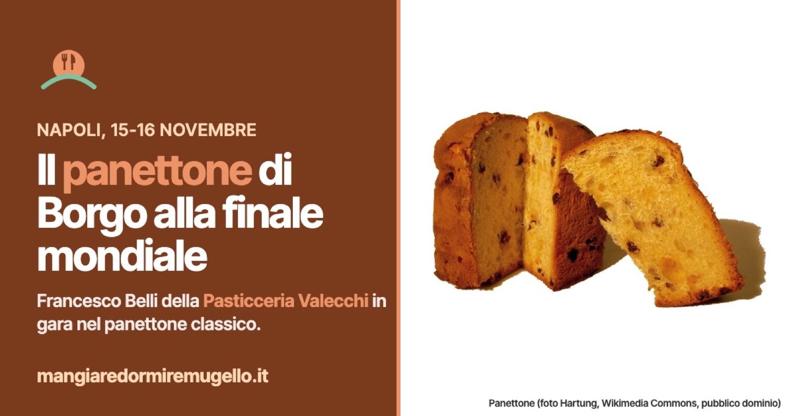

Il panettone di Borgo San Lorenzo alla finale mondiale: Francesco Belli della Pasticceria Valecchi a Napoli
Il 15 e 16 novembre il primo pasticcere della storica pasticceria di via Mazzini gareggia a Gustus nel panettone classico. Nel 2023 vinse l'oro.

C'è un panettone di Borgo San Lorenzo tra i finalisti del mondo. Lo firma Francesco Belli, primo pasticcere della Pasticceria Valecchi, che il 15 e 16 novembre sarà a Napoli, alla fiera Gustus, per la finale del Campionato mondiale «Miglior Panettone del Mondo» organizzato dalla Federazione Internazionale Pasticceria Gelateria Cioccolateria (FIPGC). Gareggia nella categoria del panettone classico.
Una strada già battuta
A Napoli Belli non arriva da esordiente. Nel 2023, allo stesso campionato e sempre a Gustus, il suo panettone classico ha vinto la medaglia d'oro. Quest'anno la pasticceria è arrivata tra le dieci migliori colombe artigianali d'Italia al concorso Divina Colomba, a Bari, su 226 pasticceri in gara.
In finale il panettone sarà giudicato su forma, profumo, cottura, gusto, sofficità, alveolatura e su come sono distribuiti canditi e uvetta. Belli lavora la stessa pasta madre dal 2000; per le materie prime punta su burro francese, uova da allevamenti non intensivi e vaniglia messicana.
Dal 1916 in via Mazzini
La Pasticceria Valecchi è in via Mazzini, il tratto del centro che a Borgo tutti chiamano Malacoda. L'ha aperta Armido Valecchi nel 1916 e da allora è rimasta alla famiglia: è una delle pasticcerie più antiche del Mugello.
Chi vuole assaggiare il panettone prima del verdetto, o dopo, sa dove andare.
Dove mangiare e dormire a Borgo San Lorenzo
A Borgo San Lorenzo la guida conta 64 posti dove mangiare e 42 strutture per dormire, ognuno con telefono e posizione sulla mappa.
Dove mangiare a Borgo San Lorenzo: https://mangiaredormiremugello.it/dove-mangiare/borgo-san-lorenzo/
Dove dormire a Borgo San Lorenzo: https://mangiaredormiremugello.it/dove-dormire/borgo-san-lorenzo/
Fonte: La Nazione, 13 marzo 2026 (Divina Colomba) e 2023 (oro FIPGC)